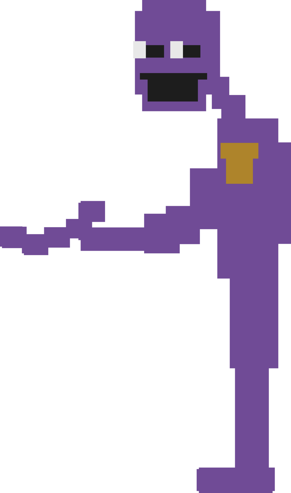
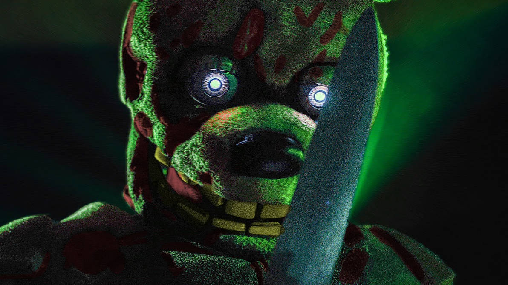
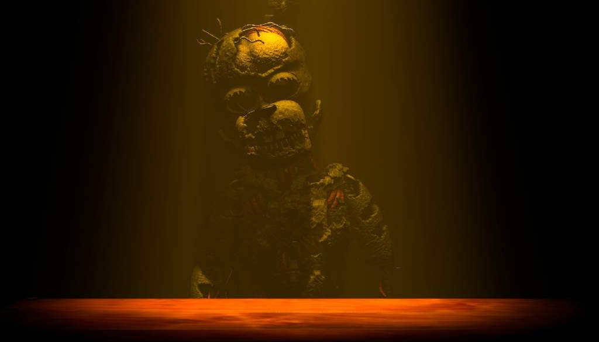

William Afton bzw. Purple Guy später bekannt unter den Namen Springtrap und Scraptrap war der Mitgründer von Fazbear Entertainment, der seinen Geschäftspartner Henry Emily bei der Geschäftsführung half.
Obwohl William sich der Öffentlichkeit als freundlicher Mann präsentierte, war er in Wirklichkeit ein Serienmörder, der in den 1980er Jahren zahlreiche Kinder ermordete und mit dem Paranormalen experimentierte.
Nach seinem Tod im selben Anzug, den er einst für seine Morde benutzt hatte, verrottete er 30 Jahre lang darin, bevor er schließlich von den Angestellten des Fazbear's Fright bei Renovierungsarbeiten gefunden wurde.
Allerdings brannte Fazbear's Fright am Ende der Woche ab. William, der sich nun Springtrap nannte, entkam nur knapp dem Feuer und war gezwungen, sich zu reparieren.
Nach seiner Selbstreparatur wurde er von seinem ehemaligen Geschäftspartner Henry zu einem Restaurant in eine Falle gelockt.
Zusammen mit seinem ältesten Sohn, seiner Tochter, Molten Freddy sowie Henry selbst starben sie alle in einem Feuer, das von Henry gelegt wurde. Mit Ausnahme von William erhalten alle ihren Frieden, wohingegen William für seine Taten ins Fegefeuer gesandt wird und dort für den Rest der Zeit durch Golden Freddy gefoltert wird.
Sein Minigame-Sprite wird als hochgewachsener, schlanker bis athletisch gebauter Mann mit lilafarbener Uniform und einer goldfarbenen Dienstplakette dargestellt.
In dem Minigame-Level „SAVETHEM“ aus FNaF 2 scheint er ein merkwürdiges Objekt in der Hand zu halten.[3] Auffällig sind seine weiß glühenden Augen. Aufgrund der Spielegrafik sind weitere Details nicht zu erkennen.
Springtrap sieht dem klassischen Bonnie äußerst ähnlich. Sein Kopf ist allerdings fast kugelrund und das Gesicht wirkt beängstigend menschlich.
Aufgrund der 30-jährigen fortschreitenden Verwesung von Aftons Leichnam und anderer Umstände, denen er in dieser Zeit erlegen war, verfärbte sich Spring Bonnies-Anzug von einem goldgelben Farbton in ein tristes Olivgrün mit leicht beigefarbenen Bereichen an seinem Bauch, den Innenseiten der Ohren und der Stupsnase. Er hat leuchtend blassgraue Augen, die besonders unheimlich wirken. Auf seinem Bauch befindet sich ein einzelner schwarzer Knopf.
Außerdem ist der gesamte Körper sehr stark lädiert und zerfetzt – er wirkt so, als würde er jeden Augenblick auseinander fallen. Dies erleichtert es, sein Endoskelett und seinen verbleibenden Leichnam zu sehen. Hinter seiner Kostümmaske befinden sich Teile des menschliche Schädels von Afton.
In einigen sog. „Rare Screen“-Bildern von Springtrap aus FNaF 3 wird gezeigt, dass er dazu fähig ist seine Maske halbwegs nach oben zu bewegen. Die Zähne und der Unterkiefer des Leichnams sind für einen sehr kurzen Augenblick während Springtraps rechtem Jumpscare im Büro zu sehen.
Afton bzw. Scraptrap hat ein sehr eigenartiges Aussehen und ist viel mehr beschädigt und verwelkt als Springtrap. Ihm fehlt der rechte Teil seines Unterarms, der in einem knöchernen Stachel endet.
Außerdem hat er große Backenzähne am Oberkiefer und sein Unterkiefer ist mit kleinen, Nadelspitzen Zähnen besetzt. Sein Kopf scheint Wangen gehabt zu haben, die seine Unter- und Oberkieferteile verbinden, aber sie scheinen entweder zerfallen oder abgerissen worden zu sein, wodurch Aftons menschlicher Kopf und die Ohren darunter zum Vorschein kommen.
Seine Augen sind jetzt silbern und glänzend und haben eine einzelne graue Pupille in der Mitte, wobei der linke Augapfel teilweise von einem Kabel verdeckt wird. Beiden seiner Ohren fehlen große Teile ihrer oberen Hälften, wobei das rechte praktisch nicht mehr vorhanden ist und nicht mehr von einem Anzug bedeckt wird.
In seiner Stirn klafft ein massives Loch, das seinen Leichenkopf entblößt.
Er hat eine bräunliche Farbe, die an verwestes Fleisch erinnert, mit Streifen von mehr rotem Fleisch, die Teile seines Gesichts und Körpers bedecken. Der Leichenkopf hat auch geschwärzte, metallisch aussehende Lippen, der Mund ist mit vielen kleinen und scharfen Zähnen und vier Kabeln gefüllt.
Sein Kostüm und Gliedmaßen sind unglaublich beschädigt, so sehr, dass fast alle seine Arme und Beine durch sie gesehen werden können, und es entlarvt gebleichte weiße Knochen unter seinem Fleisch. Außerdem fehlen ihm die Kniescheiben des Anzugs, die Springtrap hatte.